"Perceptually Uniform" Colormaps from MatPlotLib
The MatPlotLib "Perceptually Uniform" Colormaps submission includes the default colormap and default line colororder (and their families) from MatPlotLib 2 and 3. This document shows examples of their usage.
Contents
Overview
For a nice introduction to colormaps in general (and the MatPlotLib ones in particular), please see Nathaniel Smith and Stéfan van der Walt's presentation "A Better Default Colormap for Matplotlib" at the conference "SciPy 2015": https://www.youtube.com/watch?v=xAoljeRJ3lU
matplotlib_plot()
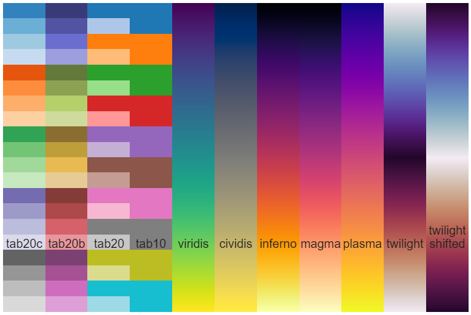
Linear Lightness
The VIRIDIS family of colormaps are designed so that equal steps in data values correspond to equal perceived differences in lightness. The top figure illustrates this property by plotting the lightness (here in CAM02-UCS colorspace) against its index for various MATLAB and MatPlotLib colormaps: the MatPlotLib colormaps appear as (nearly) straight lines, whereas very non-uniform colormaps show curves and/or irregularities. The bottom figure shows the deltaE of adjacent colors for the same colormaps (with the coefficient of variation also given), demonstrating their perceptual uniformity.
close all
matplotlib_demo(@sRGB_to_CAM02UCS)
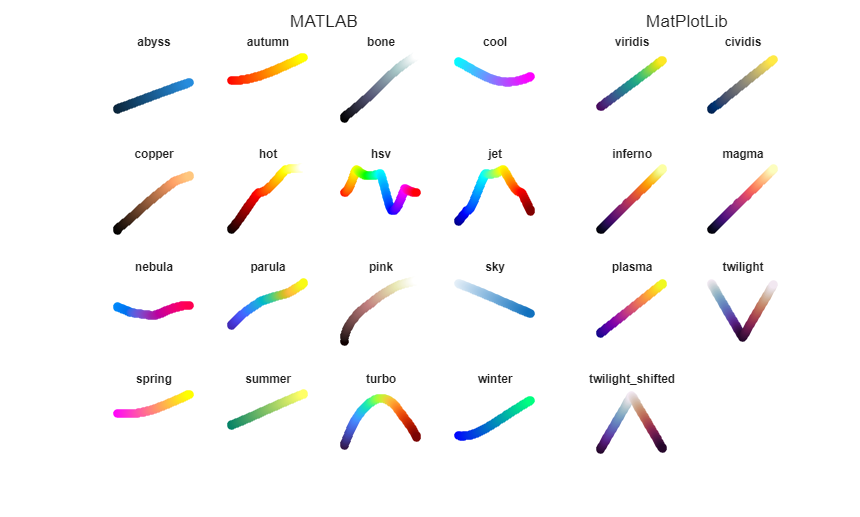
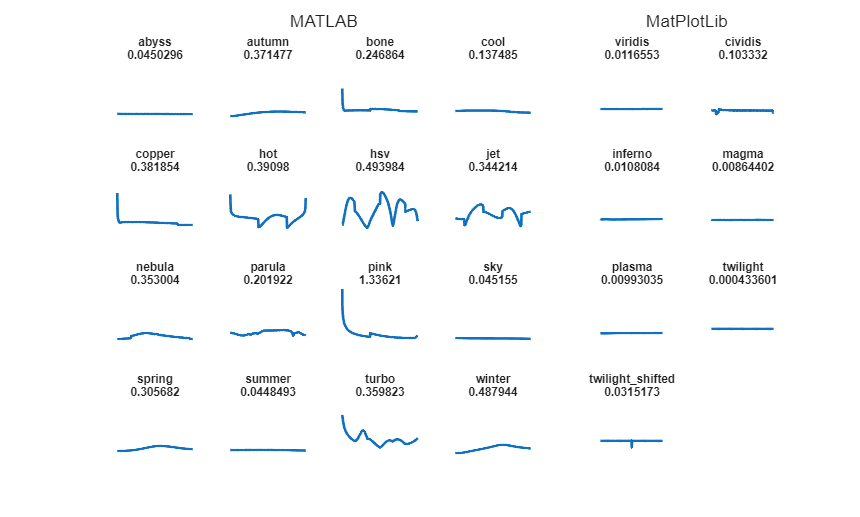
VIRIDIS
- Sequential
- Linear lightness
- Default colormap for MatPlotLib 2 and 3
close all load spine imagesc(X) colormap(viridis) colorbar() title Viridis
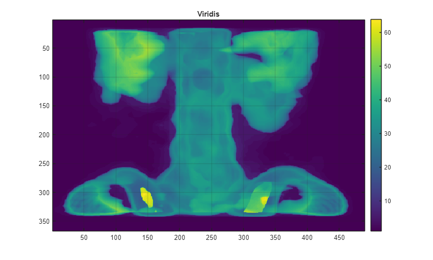
CIVIDIS
- Sequential
- Linear lightness
- Optimized for color-vision deficiency / colorblind
colormap(cividis)
title Cividis
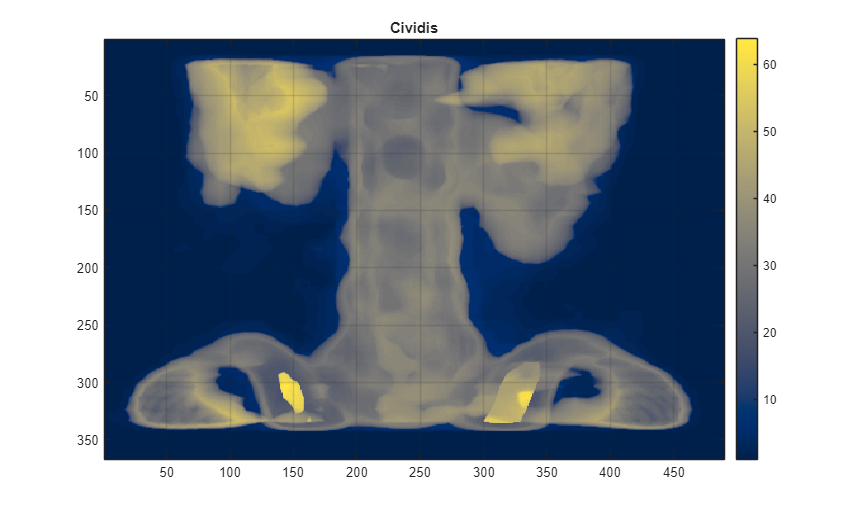
INFERNO
- Sequential
- Linear Lightness
colormap(inferno)
title Inferno
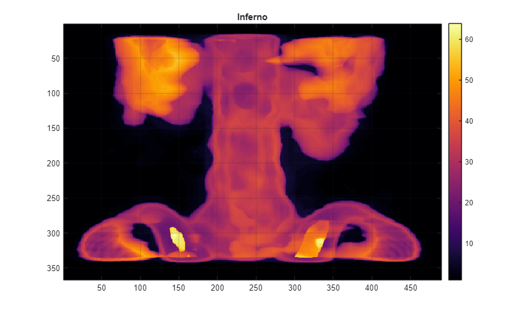
MAGMA
- Sequential
- Linear lightness
colormap(magma)
title Magma
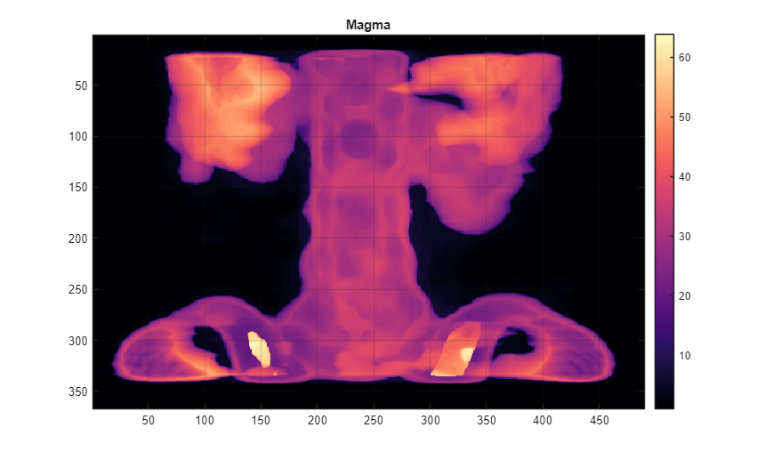
PLASMA
- Sequential
- Linear lightness
colormap(plasma)
title Plasma
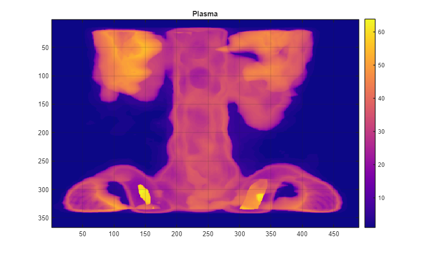
TWILIGHT
- Cyclical
- Linear lightness
- Distinct end-colors
colormap(twilight)
title Twilight
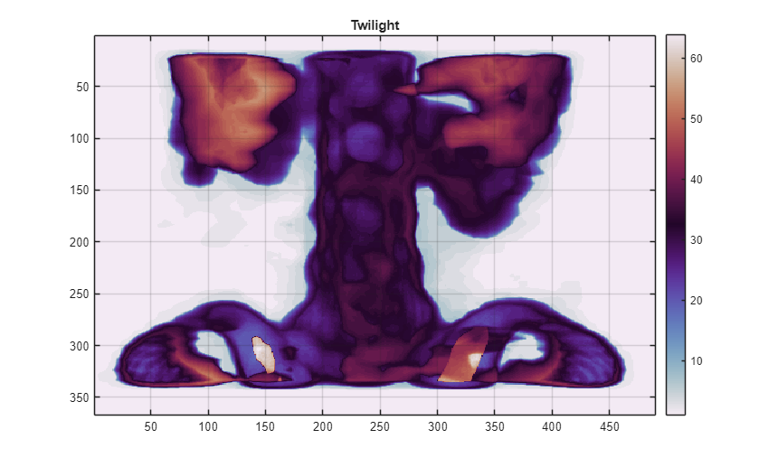
TWILIGHT_SHIFTED
- Cyclical
- Linear lightness
- Distinct end-colors
colormap(twilight_shifted)
title Twilight\_Shifted
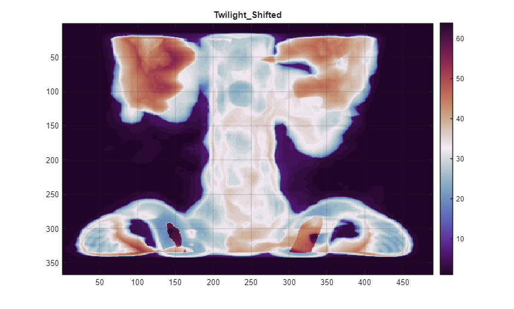
TAB10
- Qualitative
- Default line ColorOrder for MatPlotLib 2 and 3
- Named VEGA10 in MatPlotLib 2
close() V = 1:10; X = linspace(0,10,1000).'; Y = V.*sin(X+2*V*pi./10); plot(X,Y, 'linewidth',4) legend('location','eastoutside') colororder(tab10(10)) title Tab10
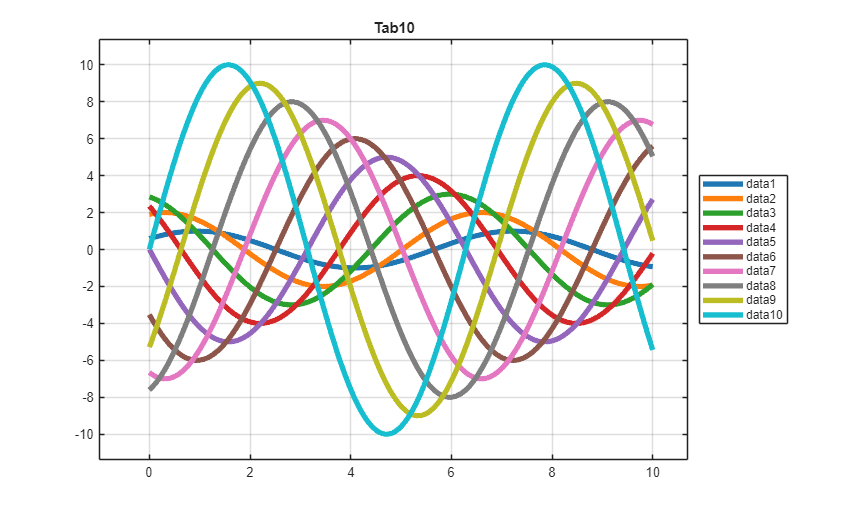
TAB20
- Qualitative
- Named VEGA20 in MatPlotLib 2
V = 1:20; Y = V.*sin(X+2*V*pi./20); plot(X,Y, 'linewidth',4) legend('location','eastoutside') colororder(tab20(20)) title Tab20
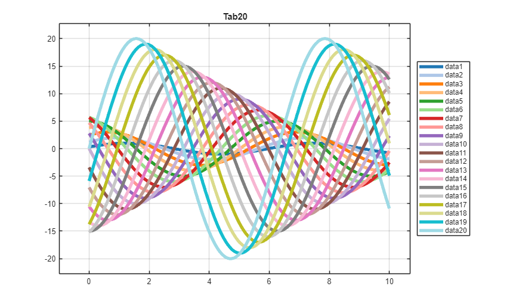
TAB20B
- Qualitative
- Named VEGA20B in MatPlotLib 2
legend('location','eastoutside') colororder(tab20b(20)) title Tab20b
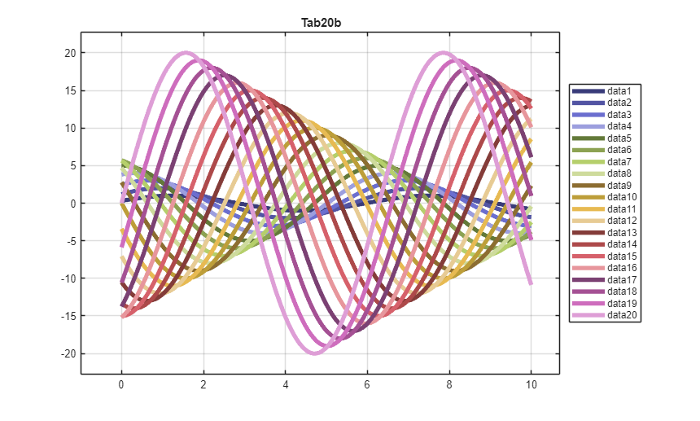
TAB20C
- Qualitative
- Named VEGA20C in MatPlotLib 2
legend('location','eastoutside') colororder(tab20c(20)) title Tab20c
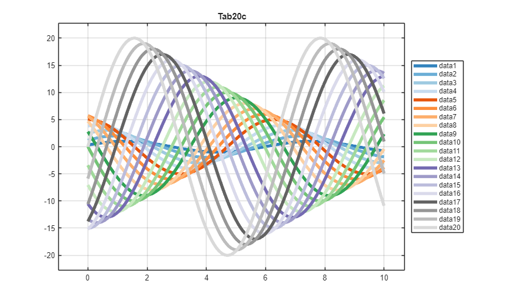